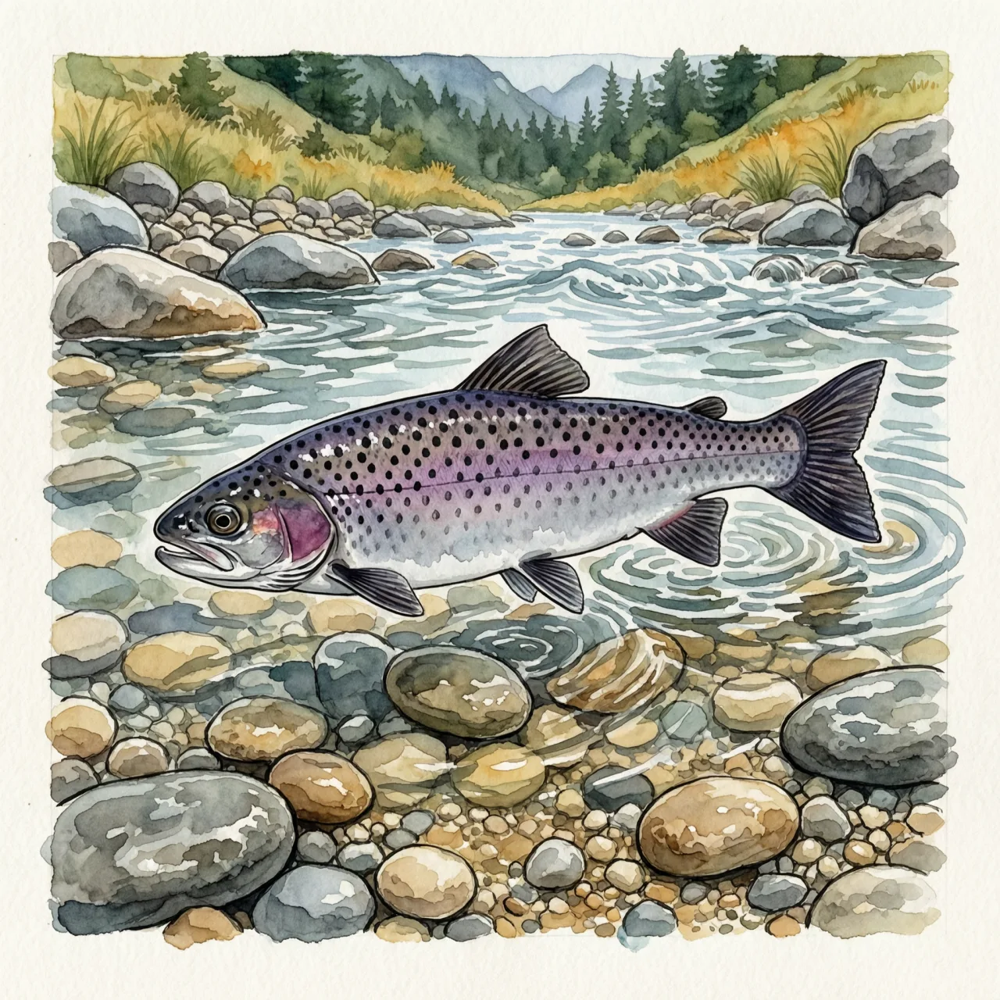
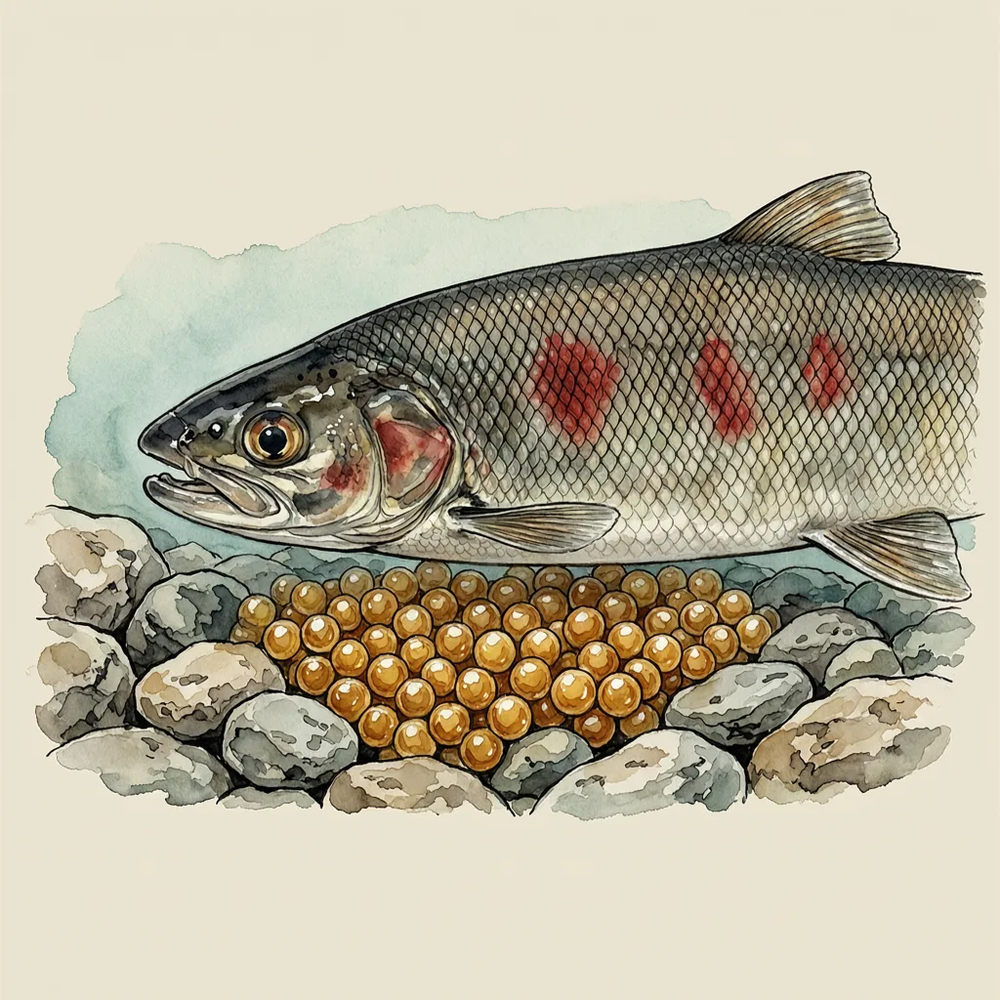

细鳞鲑是鲑科细鳞鲑属的冷水性鱼类，体延长侧扁，鳞细小，背侧紫灰色带黑色小圆斑，分布于俄罗斯、朝鲜以及汉水上游以北的山区河流。它春季进入水流湍急、底多沙砾的支流产卵，秋季回主流深处过冬，幼鱼需5－6年成熟，产卵后亲鱼大量死亡。
春天，细鳞鲑从大河的深水处出发，钻进水流湍急、底多沙砾的支流；到了秋天，又退回主流深处过冬。它挑的河段有个共同点：山区急流，砾石底质，水一直在动。它的分布从俄罗斯的叶尼塞河——也就是模式产地——经朝鲜，一直铺到汉水上游以北；再往南的平原河流，水温与流速都不对，是它待不住的地方。
产卵对细鳞鲑是一锤子买卖：亲鱼在支流的砾石滩上产完卵后大量死亡，沉性的卵直径约4毫米，落进沙砾之间继续发育。幼鱼要5－6年才长到性成熟，这几年里它们靠着水中的无脊椎动物慢慢攒个头。这样的节奏意味着，某一年支流的砾石滩没能孵出足够的小鱼，这段河段的细鳞鲑种群要过好些年才能缓过来。
最容易看走眼的是它的嘴。细鳞鲑体长可达0.7米、重达15公斤，在鲑科里算是大块头，口却很小，牙齿反而多——连舌头上都长着牙。体色也分时候：平时背侧紫灰色、缀着黑色小圆斑，腹面银灰；一到生殖期，全身颜色变暗，再浮出红色斑块。在北方山区的溪流里，舌上有牙再加上一身细密的鳞片，是认出这条俗名「花鱼」的鲑科鱼最快的办法。
